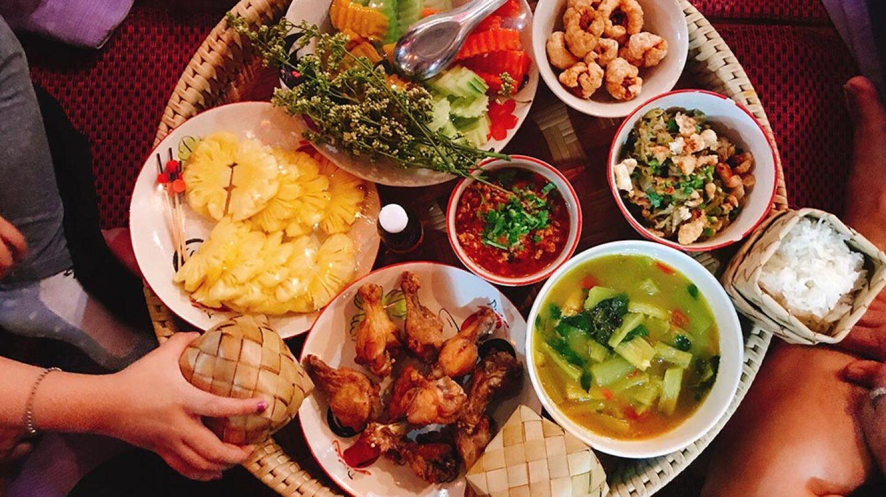

Descubre los sabores exquisitos de la cocina tailandesa: una explosión de aromas y especias en cada plato
En el mundo culinario, la cocina tailandesa se ha convertido en una sensación imparable. Sus vibrantes sabores, combinación de ingredientes frescos y exóticas especias han cautivado los paladares de comensales en todo el mundo. Desde los bulliciosos puestos callejeros hasta los elegantes restaurantes, la cocina tailandesa ofrece una experiencia gastronómica única que no se puede ignorar. La cocina tailandesa es conocida por su equilibrio de sabores distintivos: dulce, salado, picante, agrio y amargo. Cada bocado es una explosión de sabores que despiertan todos los sentidos. Los platos tailandeses son una fusión magistral de ingredientes frescos como hierbas aromáticas, limoncillo, chiles, galanga, cilantro y lima, que se combinan para crear deliciosas combinaciones. Uno de los platos más emblemáticos de la cocina tailandesa es el Pad Thai. Este plato de fideos de arroz salteados con camarones, tofu o pollo, envuelto en una deliciosa salsa agridulce y espolvoreado con cacahuetes picados, es un favorito tanto entre los locales como entre los visitantes. Cada bocado ofrece una mezcla equilibrada de texturas y sabores que deleitan el paladar. Otro plato icónico es el Tom Yum, una sopa picante de camarones con hierbas y especias. El Tom Yum es famoso por su combinación de sabores picantes, cítricos y herbales. Cada cucharada de esta sopa reconfortante es un viaje de sabores que despierta los sentidos y calienta el alma. Además de los platos principales, la cocina tailandesa ofrece una amplia variedad de entrantes, ensaladas frescas y postres deliciosos. Desde los famosos rollitos de primavera tailandeses hasta la refrescante ensalada de papaya verde, cada plato tiene su propia identidad y sabor único. La cocina tailandesa también se destaca por su presentación visualmente atractiva. Los chefs tailandeses tienen una habilidad excepcional para decorar y adornar los platos, creando verdaderas obras de arte comestibles que son un placer tanto para la vista como para el paladar. Si bien muchos pueden disfrutar de la cocina tailandesa en los restaurantes locales, también hay una creciente tendencia de viajar a Tailandia para experimentar de primera mano la auténtica cocina tailandesa. Los viajes culinarios se han convertido en una forma de sumergirse en la cultura y la gastronomía de un país, y Tailandia es uno de los destinos principales para los amantes de la comida.